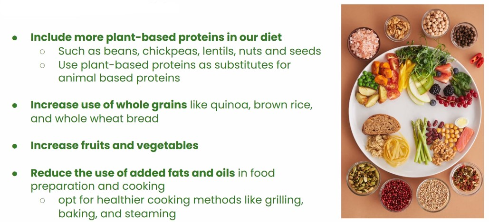
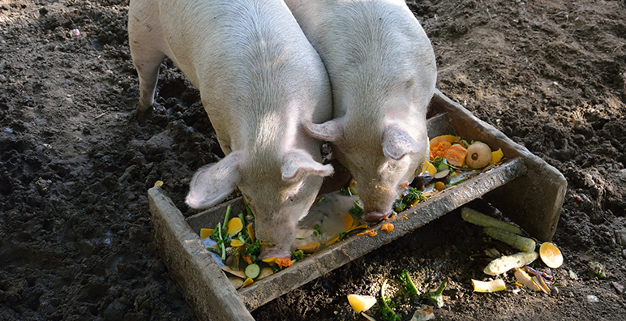
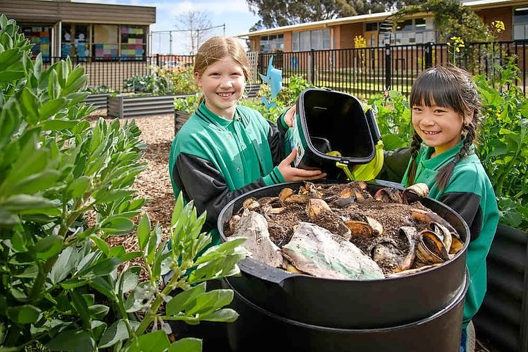
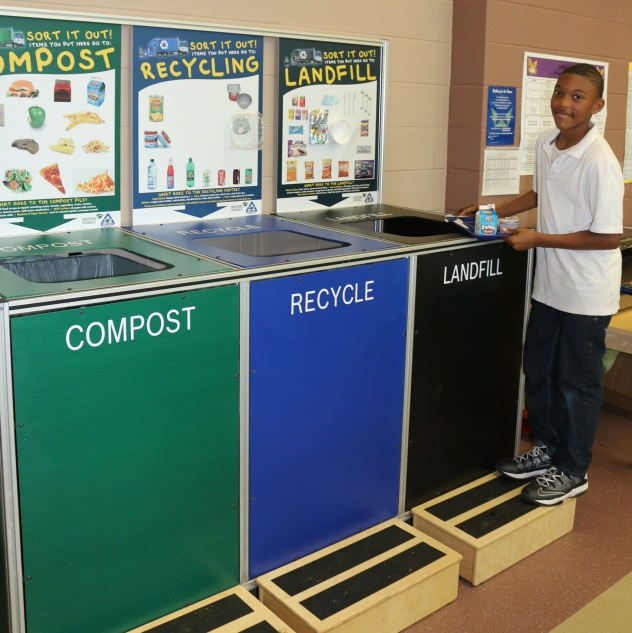

Sustainable Practices for Schools
Implementing sustainable practices in schools to manage food waste is crucial for environmental conservation. Schools can adopt several strategies to minimize food waste, starting with raising awareness among students and staff about the impacts of food waste on the environment. Implementing efficient food inventory management systems helps in purchasing only what's necessary, reducing overstocking and subsequent waste. Moreover, encouraging meal planning and portion control in cafeterias can significantly reduce leftover food. Schools can also establish composting programs to turn food scraps into nutrient-rich soil for gardens or donate surplus edible food to local charities. Engaging students in educational programs focused on sustainable food practices creates a culture of responsibility, fostering a generation of environmentally conscious individuals. By incorporating these sustainable measures, schools not only reduce their ecological footprint but also instill valuable lessons in waste reduction and environmental stewardship among their students.
10 questions to ask your caterer

Company policies
1.What is your company's Sustainable policy
2.Do you have a plan to reduce your carbon emissions including those from your supply chain?
Sourcing and menu planning
3.Do you consider sustainability in your procurement?
4.Do you consider your carbon footprint when planning your menus?
Food and packaging waste
5.What actions do you do to minimise or dispose your food waste? for example in my food we turn our food waste to animal feel for farms.
6.Do you measure your food waste?
7. What are you doing to eliminate single use plastic?
8. What are you doing to minimise packagine waste? do you serve food in boxes or in plates with cutlery?
9. How do you handle left overs? Compost?
Spread Awareness
10. How do you help educate student about the food you're serving and its environmental impact?
What are the options?
Food waste as Animal feed
Click image to learn more
Consider donating your food waste to animal farms nearby.
Compost
Schools practicing composting contribute to environmental sustainability by repurposing food scraps and organic waste, creating nutrient-rich compost that enriches soil for school gardens or can be donated to farms.
Sorting
Sorting trash is essential as it allows for effective waste management, enabling the separation of recyclable materials, organic waste for composting, and non-recyclables, which minimizes environmental impact and facilitates proper disposal or recycling processes.
Spread awareness
Put up posters, present this problems in assemblies in classrooms, take responsibility of telling friends and family and spreading awareness about food waste in your school. Make some noise for food waste!